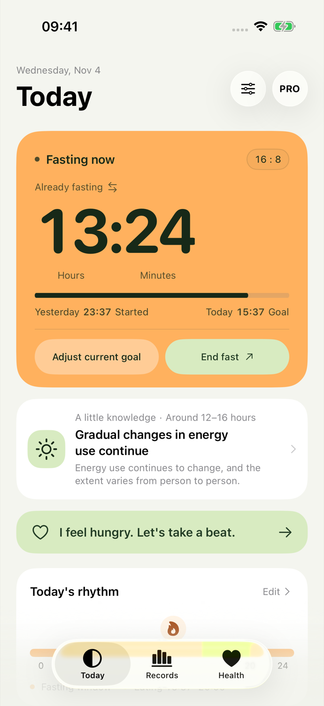
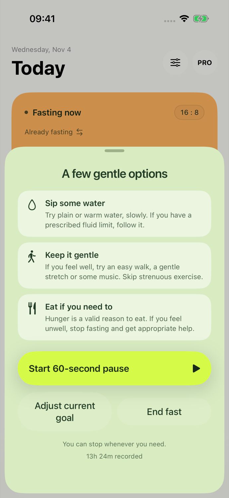
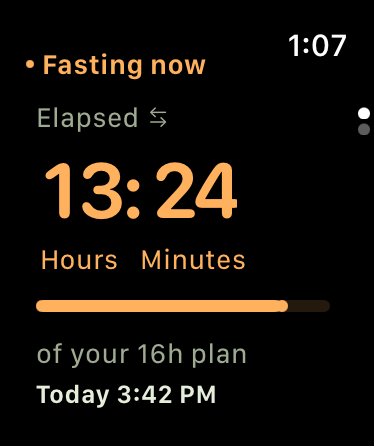
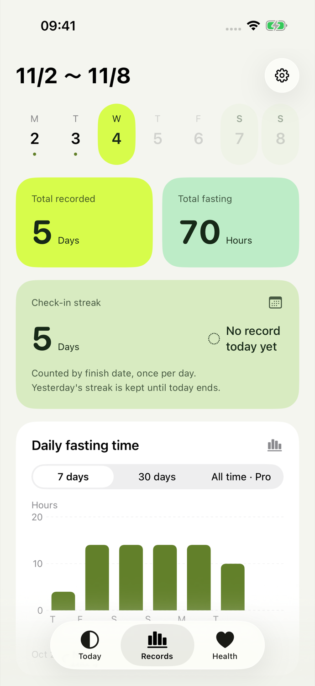
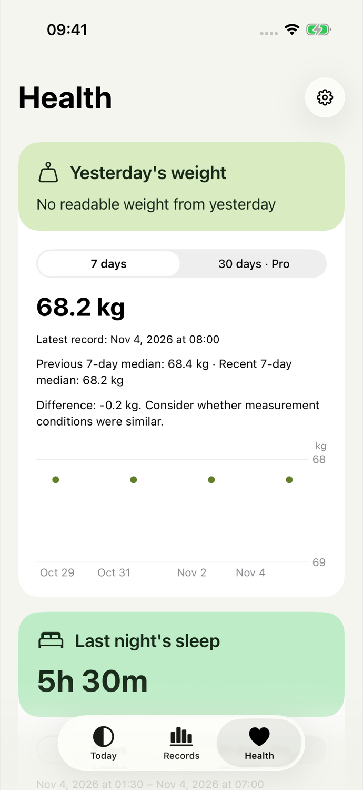

Your day.Your rhythm.
See your fasting time at a glance on iPhone and Apple Watch. Your daily timeline follows your actual start and finish, with room to adjust whenever you need.
Try your routineFor iOS 18 or later and watchOS 11 or later
Product preview. Not yet on the App Store.

A day that fits
Choose a duration and start time to see your day. Orange marks fasting; lime marks eating. In the app, the timeline updates to match your actual records.
Static example: start at 20:00, eat at 12:00 the next day. Enable JavaScript to adjust.
Enter a valid start time.
Fasting window16 hours
Eating window8 hours
Start at 20:00. Your eating window begins at next day 12:00.
Times use your current regional format.
This routine preview doesn’t save or upload your choices.
A moment to notice
When you feel like eating, an optional 60-second pause gives you a moment.

Find gentle suggestions for water, light activity, or eating when you need to. Take an optional minute, adjust your goal, or finish your fast. If you feel unwell, stop fasting and get appropriate help.
Record life as it happens
Check the time with your phone put away. When plans change, record the day you actually had.
A glance at your wrist
Turn the Digital Crown or swipe up and down between your timer and plan. Start or finish on your Watch, even while your phone is offline, then sync when it reconnects.

Your actual days
Pick a day in the week strip, review total time and your check-in streak, or switch between 7-day and 30-day charts. Free includes the last 30 days of records; Pro opens earlier history. Correct a time or delete a record when needed.

Sleep, weight, and movement, in view
Open Health to see last night’s sleep, yesterday’s weight and workouts, and their trends on one page. Each category has its own chart period.
7-day charts are free; Pro adds 30 days. Choose which health categories to allow and manage sources in Settings. Missing dates aren’t filled with zero.

Your records stay close
No account, ads, or analytics SDKs. See where your records live and choose which images to share or records to delete.
Read the privacy policyFasting records on your devices
The app and widgets share fasting records on the same device. Your paired iPhone and Apple Watch sync through the system connection. Fasting has no data server of its own.
Health access is your choice
Choose sleep, weight, and workouts separately. Up to 30 days of health records stay in a private iPhone cache. They don’t go to your Watch or widgets, and Fasting doesn’t write to Apple Health.
Preview before you share
Hide numbers and specific dates in record-sharing images. Morning check-in cards can include your selected health categories; you can hide each one before sharing.
You choose what to delete
Delete all data in Settings. Deletion reaches your paired device on its next sync. Images you’ve already saved or shared stay at their destination.
A few questions
Does Fasting tell me how long to fast?
You choose the duration. The app offers 12:12, 14:10, 16:8, and custom goals of 8–20 hours to record a routine you’ve chosen. It doesn’t decide whether fasting is appropriate for you or provide diagnosis or treatment advice.
Does it stop when I reach my goal?
No. Reaching your goal updates the display and optional reminders. You can finish earlier or whenever you’re ready. The record keeps your actual start and end times.
Do I need to connect Apple Health?
No. The timer and fasting records work without Apple Health. You can enable health categories separately. Turning a category off stops its queries and clears its local cache and related hints. The original records in Apple Health stay there.
Does my Watch need my phone online?
Local timing and starting or ending a fast work while your phone is offline. Records sync when it reconnects. If both devices started a fast while disconnected, the app asks which record you want to keep.
What’s free, and what does Pro add?
The timer, support, Watch app, last 30 days of fasting records, and Night sharing style are free. Pro is an optional one-time purchase for full history, medium and Lock Screen widgets, Watch complications, Live Activity, 30-day health charts, and Daylight and Journal sharing styles. The App Store shows the price.
Can I download it now?
This is a product preview. Fasting hasn’t been released on the App Store or TestFlight yet. The site and app support simplified Chinese, traditional Chinese, and English. Download links will be added after release.